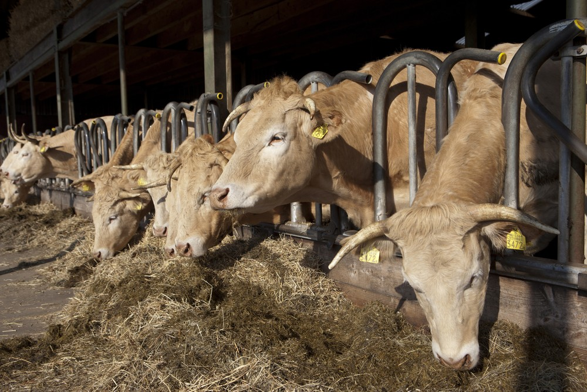

Soil Regeneration
Benefits of Organic Fertilizers for Healthy Soil
Dr. K. Ramanathan
October 24, 2026
5 min read
Verified Agronomic Review

Decades of continuous synthetic chemical fertilizer usage have stripped agricultural topsoils of essential humus, resulting in severe compaction, micro-nutrient lockout, and declining crop yields across commercial farms.
Agronomist Practical Field Rule
Always incorporate organic manures into the top 15 cm of soil 2–3 weeks prior to sowing. Ensure light residual moisture is present to immediately stimulate aerobic microbial colonization without exposing living bacteria to direct midday solar radiation.